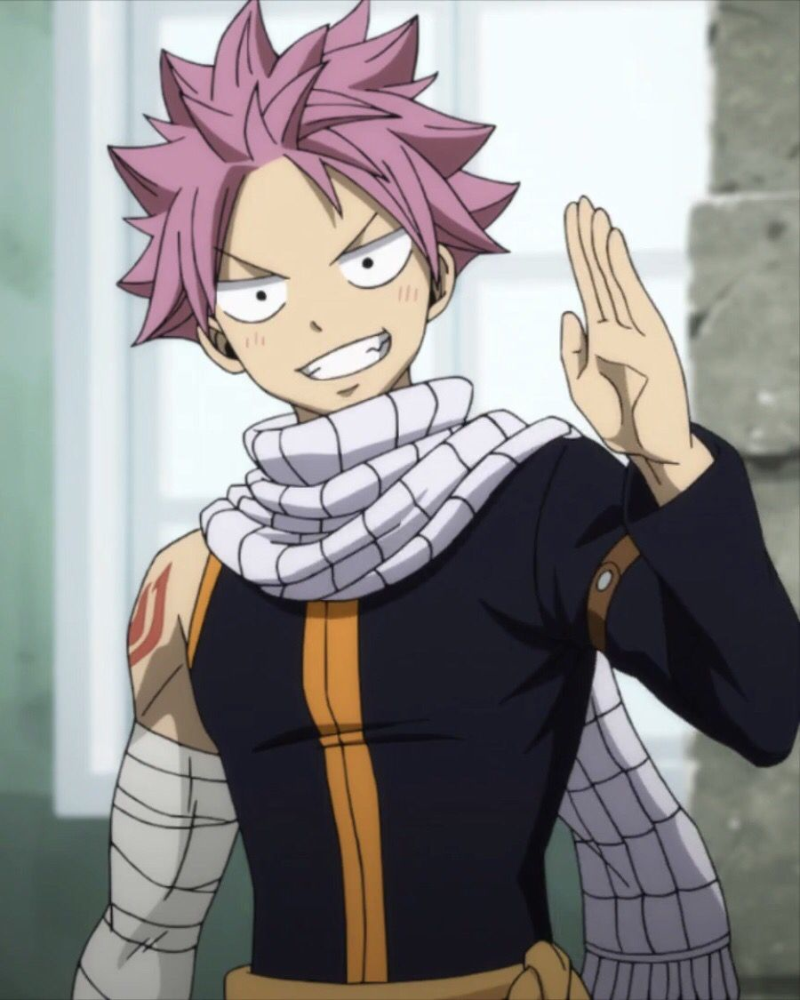
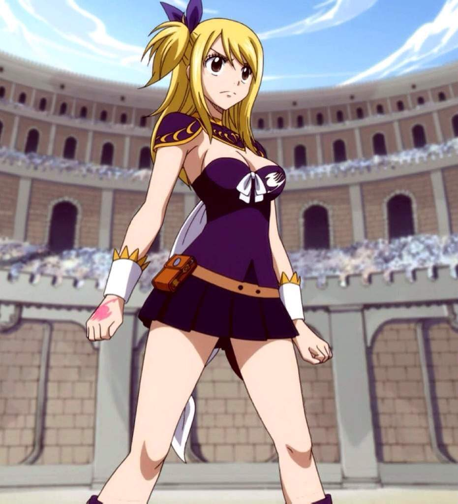
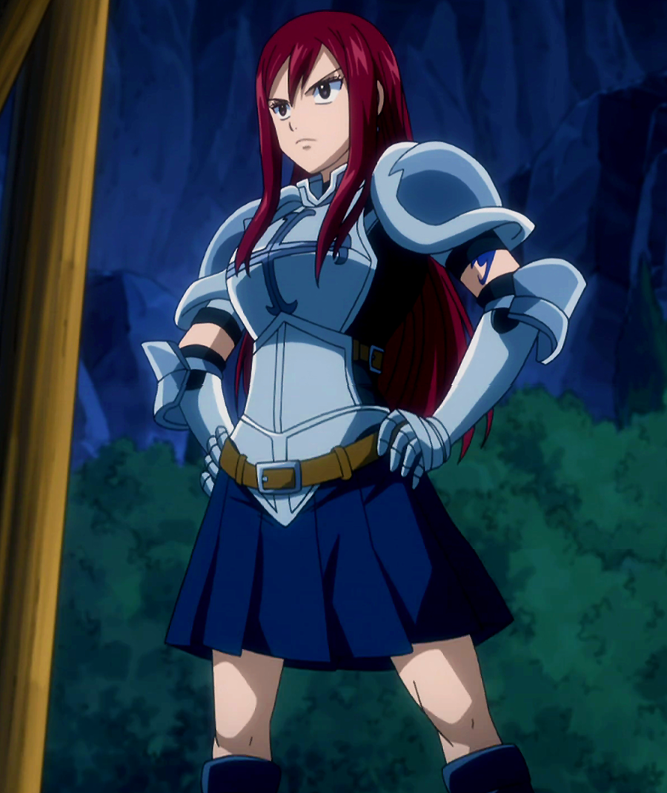
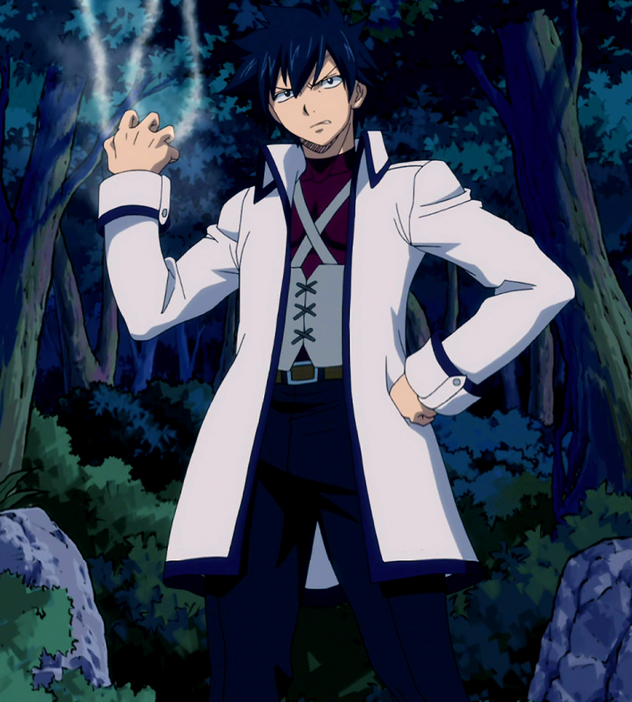
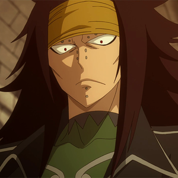

Описание
В королевстве Фиоре признанные маги объединены в множество гильдий, но для молодой «небесной волшебницы» Люси Хартфилии существует только одна — легендарная Фейри Тейл, куда она стремится попасть с начала сознательной жизни. Эта гильдия славится как силой и способностями своих магов, так и их экстравагантностью и бесконечным соперничеством между собой. В итоге магическое лекарство иногда оказывается хуже болезни, но такова жизнь! Вот только все знают, что Фейри Тейл — гильдия закрытая и малочисленная, для вступления нужно поручительство кого-то из членов, так что Люси, дочь лорда, оставляет семью и пускается в долгое путешествие.
Многое пришлось вынести девушке в своих поисках, но в портовом городе Хальцион она встретила розововолосого парня по имени Нацу Драгнил. Как выяснилось, новый знакомый — полноправный маг Фейри Тейл по прозванию Саламандер, и даже его летающий кот Хэппи — тоже член Гильдии! Правда, после теплого знакомства героев в стиле Лины Инверс город оказался слегка разрушен, но главное все же случилось — Нацу дал Люси рекомендацию. Вот теперь начинаются настоящие магические приключения!
Главные герои

Нацу Драгнил — Маг гильдии Хвост Феи, а также член Команды Нацу. Он один из пяти Убийц Драконов, который был отправлен в будущее на 400 лет вперёд, чтобы победить Акнологию. Один из главных героев манги и аниме "Хвост Феи".
Люси Хартфилия — Маг Звёздных Духов, член гильдии Хвоста Феи и Команды Нацу. Одна из главных героев манги и аниме "Хвост Феи".
Эрза Скарлет — Маг S-Класса Гильдии Хвост Феи, а также член Команды Нацу. Являлась Мастером Гильдии во время отсутствия Макарова в X792 году. Одна из главных героев манги и аниме "Хвост Феи".
Грей Фуллбастер — Маг Созидания Льда и Убийца Демонов, состоящий в гильдии Хвост Феи, который входит в Команду Нацу. Один из главных героев манги и аниме "Хвост Феи".
Другие популярные герои
